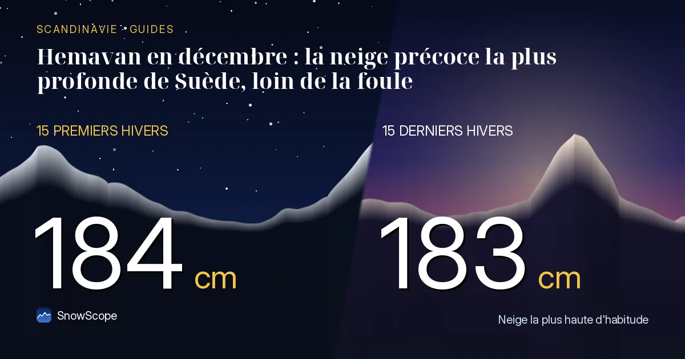

Hemavan en décembre : la neige précoce la plus profonde de Suède, loin de la foule
En deux lignes : Hemavan, dans les montagnes suédoises près de la frontière norvégienne, a la neige de décembre la plus profonde de toutes les stations nordiques comparées. Un 15 décembre typique, nos 46 hivers d'historique donnent 82 cm à mi-pente (799 m), et chacun de ces hivers y avait 30 cm ou plus la semaine du 15 au 21 décembre.
Consultez les prévisions neige en temps réel pour Hemavan sur l'application SnowScopeHauteurs de neige, alertes poudreuse et carte 3D, gratuitement.
Le verdict
Si un décembre bon marché signifie pour vous « aucun risque de neige, peu de monde, village simple », Hemavan convient. Ce n'est pas grand : 37 km de pistes cartographiées et 9 remontées entre 462 m et 1136 m. C'est loin au nord et loin des grandes villes, ce qui garde l'endroit calme avant Noël.
Le prix de ce calme, c'est le trajet et des journées très courtes. Le prix du forfait, nous ne pouvons pas le donner : la page officielle de l'exploitant que nous avons consultée affiche les tarifs d'un autre domaine, nous n'en citons donc aucun.


Décembre, semaine par semaine
La mi-pente avait 30 cm ou plus dans 98 % des hivers dès le 1er au 7 décembre, et dans tous les hivers à partir du 8. Au sommet, c'était chaque hiver, chaque semaine de décembre. Seul le bas (462 m) est faible au début : 78 % la première semaine, puis 89 % et 91 %.
La profondeur est l'autre histoire. La semaine de Noël, 96 % de nos hivers avaient 60 cm ou plus à mi-pente, et un 24 décembre typique donne 62 cm en bas, 93 cm à mi-pente et 128 cm au sommet.
En eau stockée, décembre a peu bougé
Un manteau aussi épais en décembre est une grosse réserve d'eau d'hiver qui dure ici jusqu'au printemps : le mois le plus enneigé à mi-pente est avril. La tendance est douce. La moyenne de décembre à mi-pente est passée de 89 cm sur les 15 premiers hivers à 81 cm sur les 15 derniers, et chaque semaine de Noël des 15 derniers hivers y avait encore 30 cm.
L'hiver dernier, quand beaucoup de stations manquaient de neige, Hemavan avait 88 cm à mi-pente le 15 décembre.
À côté d'Åre
Åre est le nom célèbre, avec bien plus de ski (116 km de pistes cartographiées). En décembre, la couche y est plus mince : 40 cm à mi-pente un 15 décembre typique et 89 % des hivers avec 30 cm la semaine du 15 au 21 décembre. Les deux vendent leurs forfaits à prix dynamiques, et pour aucun nous n'avons pu lire de prix fixe sur la page officielle.
Le choix oppose donc taille et certitude : Åre pour la variété et la vie de village, Hemavan pour la neige la plus sûre et la plus profonde du mois.
Pour qui ?
Ceux qui veulent de la neige naturelle profonde avant Noël sans avoir besoin d'un grand domaine : randonneurs à ski, familles qui aiment le calme, et tous ceux qu'un décembre vert dans les Alpes a déjà déçus. Prévoyez de la patience pour le trajet et de l'enthousiasme pour les journées courtes.
Conseils aux skieurs
- Toutes les semaines de décembre marchent à mi-pente ; le bas est le plus sûr à partir du 8 décembre.
- Vérifiez les prix officiels du forfait pour vos dates avant de réserver ; nous n'avons pu confirmer aucun chiffre.
- Organisez le voyage tôt : le nord de la Suède a peu de vols et de longs transferts en hiver.
- Neige profonde = terrain avalancheux hors-piste : lisez la prévision d'avalanches suédoise et emportez le bon matériel.
Autres cartes (sites externes)
Références et crédits
- Hemavan: official lift-pass page of the operator (prices by date; no fixed price quoted), checked 13 November 2026 tarnabyalpint.se/en/book/lift-pass/price-list/
- Åre: official lift-pass page of the operator (prices by date; no fixed price quoted), checked 13 November 2026 www.skistar.com/en/winter/skipass/buy-skipass/lift-pass-are/
À propos de ces chiffres
Chiffres de neige : historique SnowScope, 46 hivers passés (1980-81 à 2025-26) aux altitudes de la station, corrigé de l'altitude (une estimation pour une zone, pas les bulletins de la station) ; « bonne neige » = 30 cm ou plus au sol en moyenne sur la semaine. Carte : notre hauteur habituelle au 15 décembre répartie sur le relief selon l'altitude. Pistes et remontées : cartographie OpenSkiMap. Forfaits : grilles officielles des stations, vérifiées le 13 novembre 2026 ; les prix peuvent changer.
Bulletins d'avalanche officiels: Lavinprognoser (Naturvårdsverket)
Citer ce bulletin
Pour la recherche, l'enseignement ou la presse : chiffres et graphiques réutilisables librement sous CC BY 4.0 avec cette citation.
SnowScope (2026), Hemavan en décembre : la neige précoce la plus profonde de Suède, loin de la foule, https://snowscope.app/blog/fr/2026/11/hemavan-december-skiing-lapland-deep-snow-budget.html, consulté le 2026-11-14
SnowScope (Atlas Labs). (2026, November 14). Hemavan en décembre : la neige précoce la plus profonde de Suède, loin de la foule. SnowScope snow reports. https://snowscope.app/blog/fr/2026/11/hemavan-december-skiing-lapland-deep-snow-budget.html
BibTeX
@misc{snowscope2026hemavandecemberskiinglap,
author = {{SnowScope (Atlas Labs)}},
title = {Hemavan en décembre : la neige précoce la plus profonde de Suède, loin de la foule},
year = {2026},
month = nov,
howpublished = {\url{https://snowscope.app/blog/fr/2026/11/hemavan-december-skiing-lapland-deep-snow-budget.html}},
note = {Published 2026-11-14 15:34 UTC; accessed 2026-11-14}
}· CC BY 4.0 · Méthodes, données et outils →
Hemavan : neige et température selon l'altitude, cet hiver vs l'hiver dernier (outils) →
Suivre Hemavan
Gratuit : un message quand la neige arrive, et la météo chaque matin.